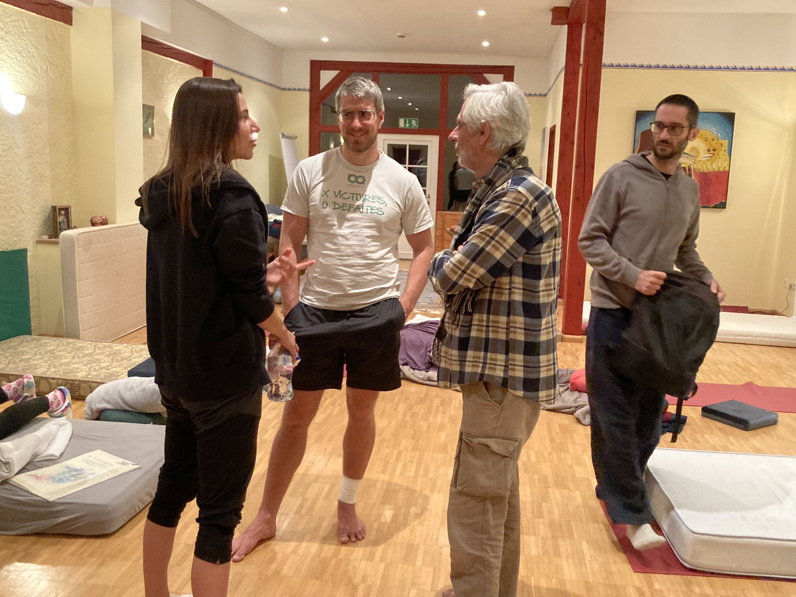
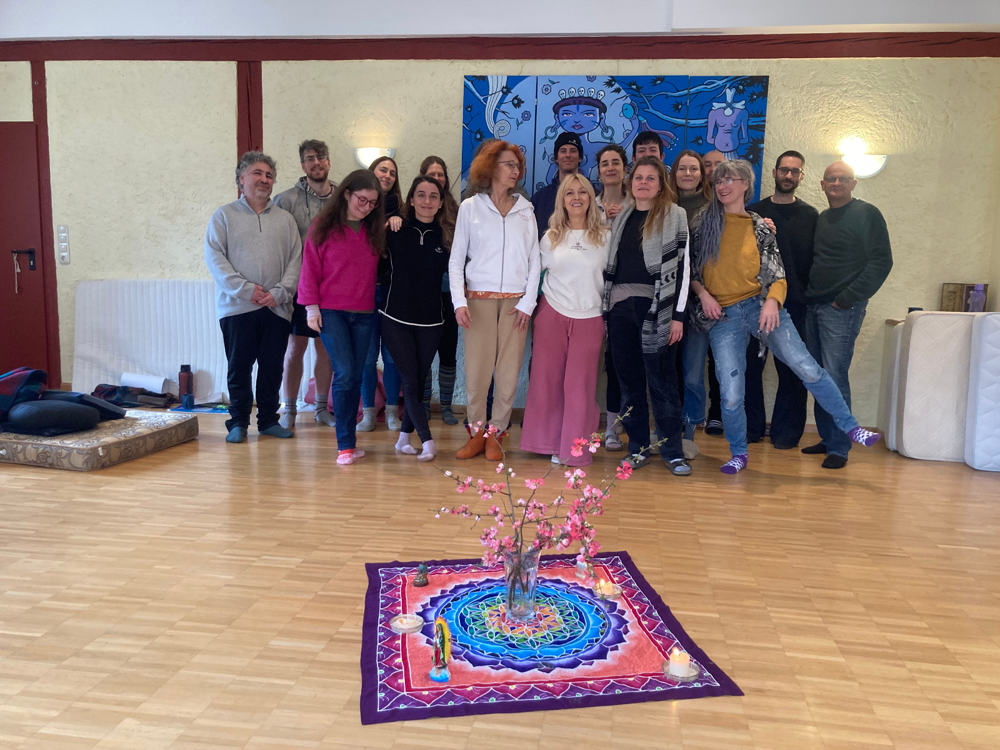
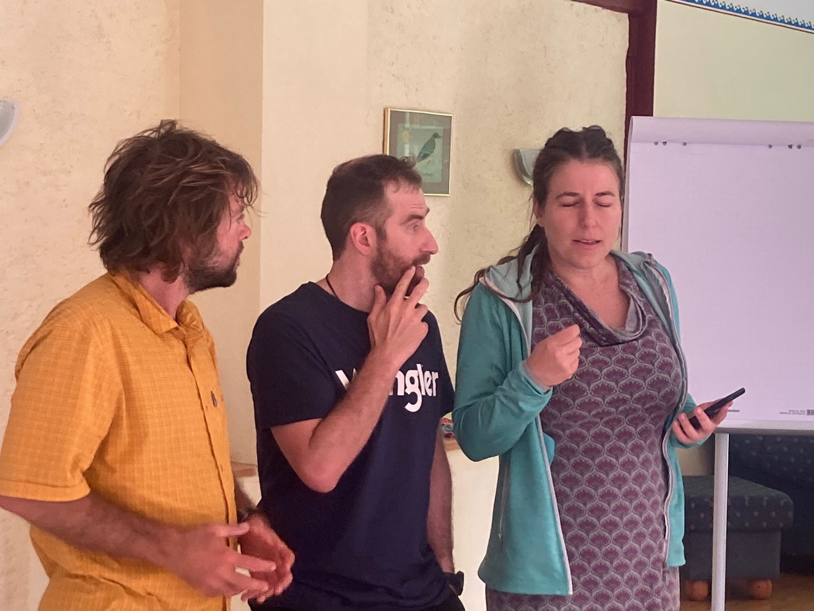
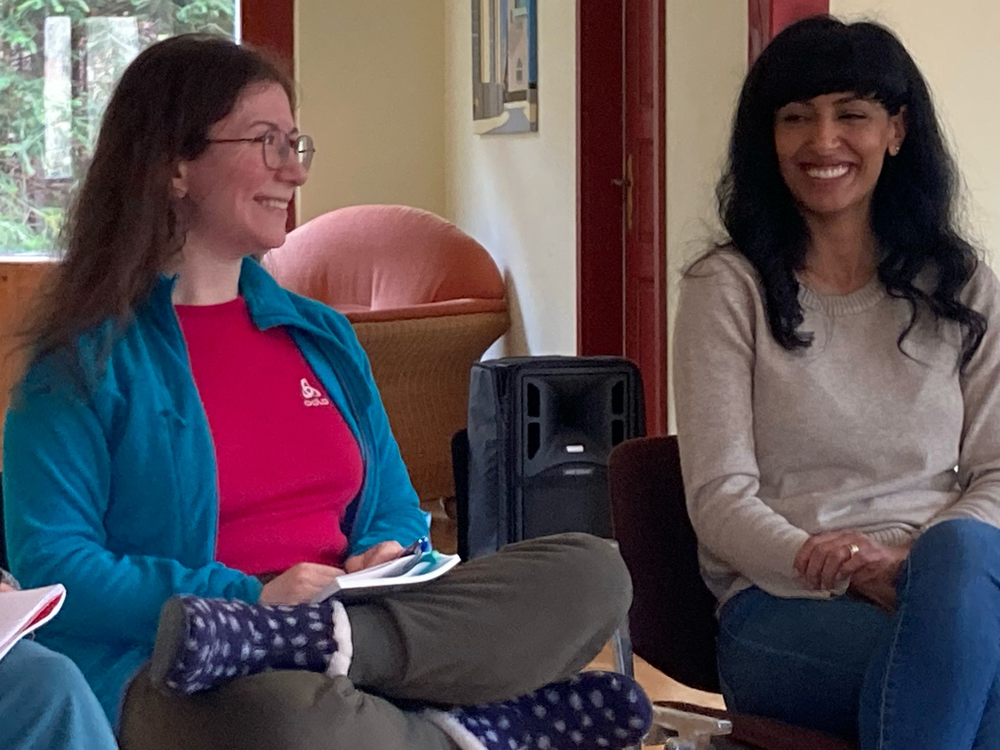
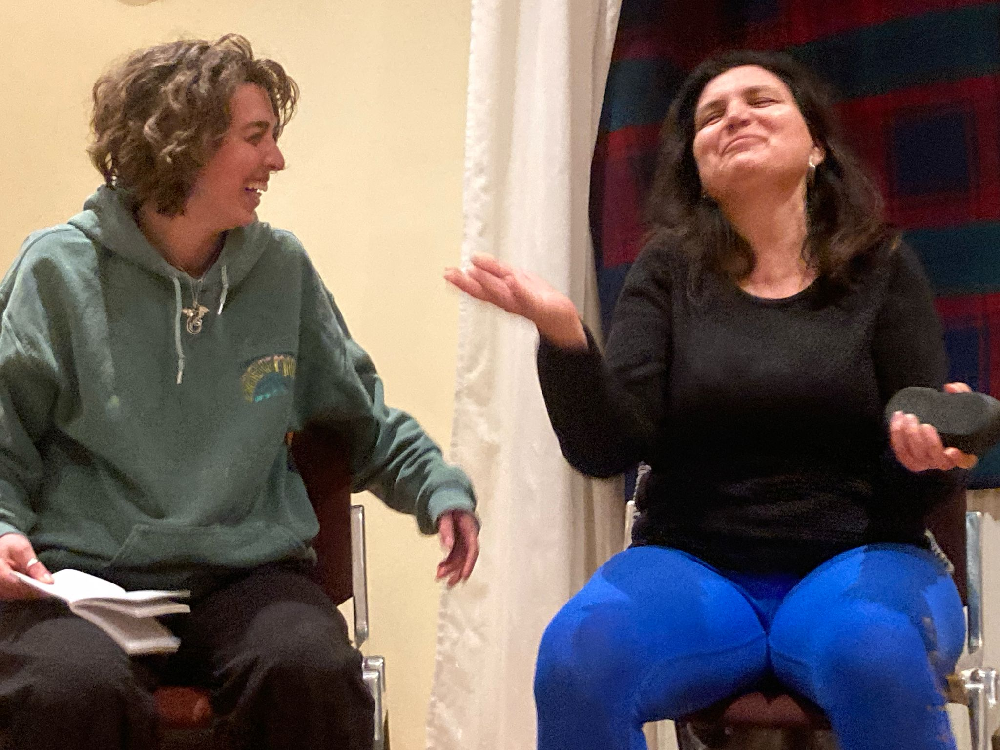
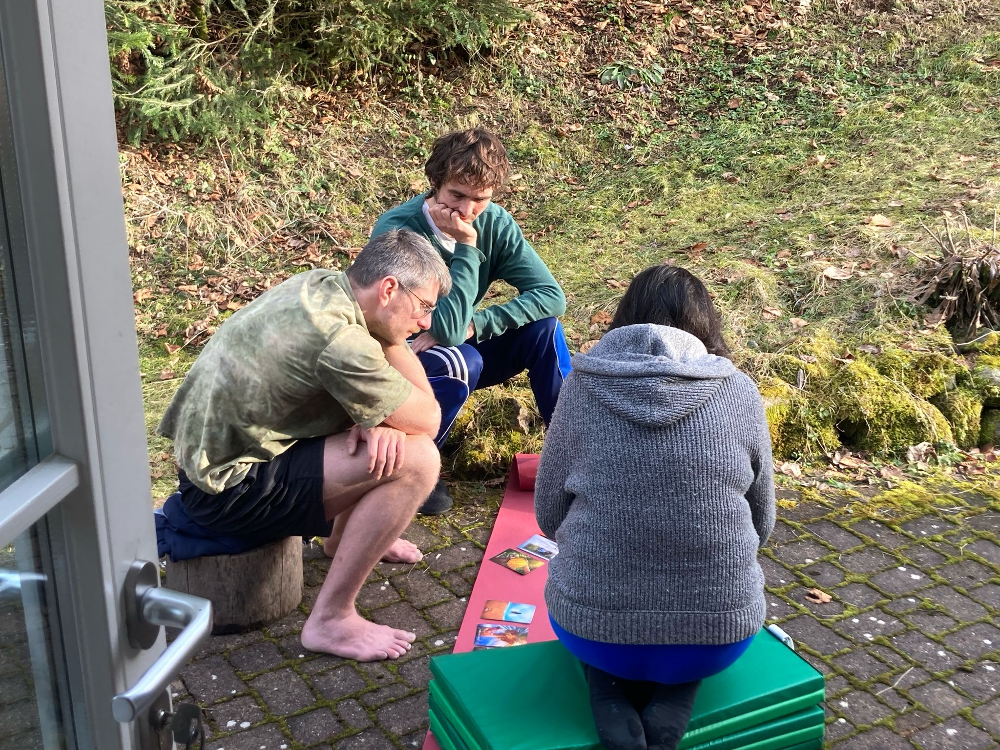
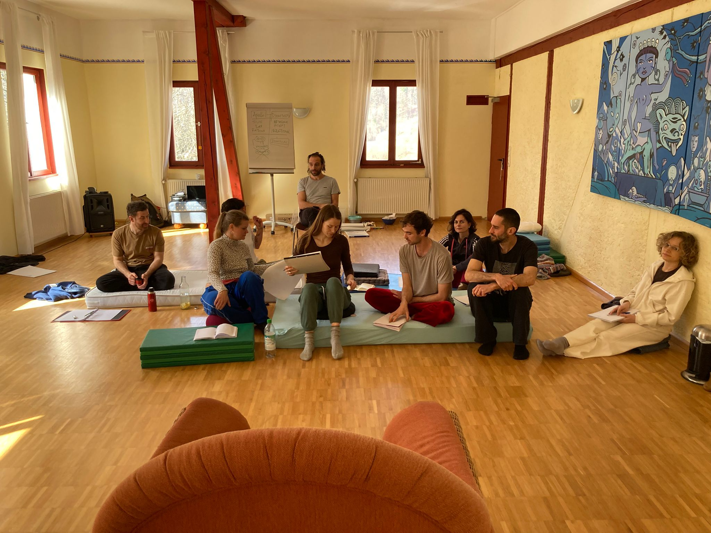
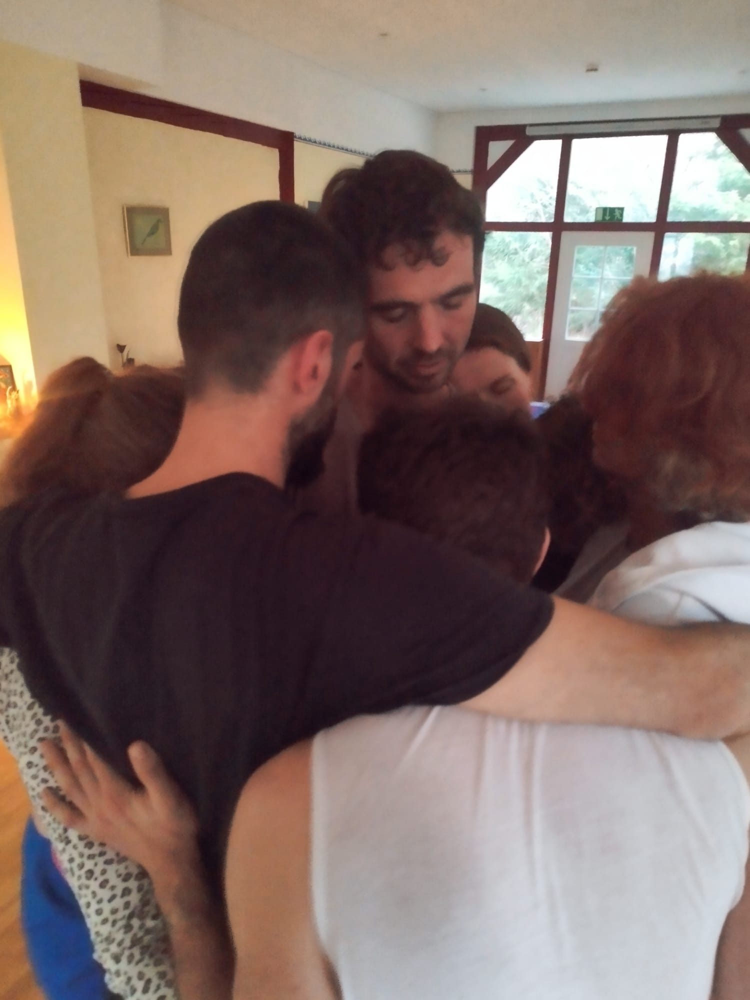

Professional Training
EDUCATING THERAPISTS FOR A REVOLUTION OF CONSCIOUSNESS
Welcome to our School for Transpersonal Counselling & Breathwork Psychotherapy!
Welcome to our School for Transpersonal Counselling & Breathwork Psychotherapy!
If you want to become a transpersonal psychotherapist and your purpose in life is to support and help other human beings, starting with yourself, this programme is for you. Our online Transpersonal Psychotherapy Training will give you the tools and skills needed to work in this pioneering domain of psychotherapy.
The training is a creative, innovative approach to psychotherapy and counselling, integrating developmental, relational and archetypal perspectives over a four year course.
Our team of teachers have extensive experience in the fields of Transpersonal Psychology/Psychotherapy and Holotropic Breathwork® respectively Grof®Breathwork. The program is based on criteria recognized by the Global Transpersonal Network EUROTAS.
Online lectures
and
intensive seminars
in Western Europe.
2024 – 2027




A learning community with heart
"This training is not only about methods. It is about becoming more present, more human, and more able to accompany others with depth and compassion."
Real people, real relationships, and embodied practice are at the center of every module.






Integrating mind, body, and spirit through transpersonal psychology and somatic practices.
Learn from experienced practitioners and teachers in transpersonal therapy and breathwork.
EUROTAS-accredited programs leading to professional certification in transpersonal psychotherapy.
Join our community of practitioners dedicated to consciousness transformation and healing.
Get in Touch